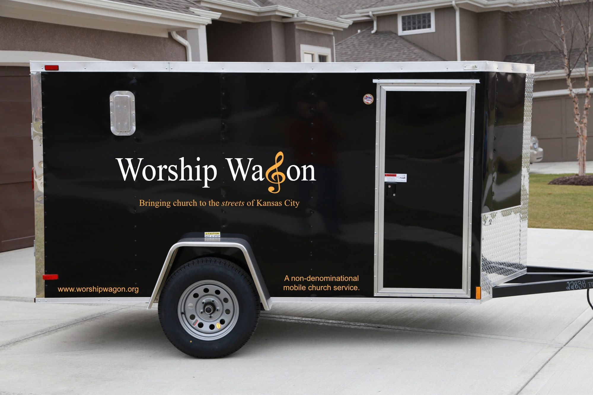
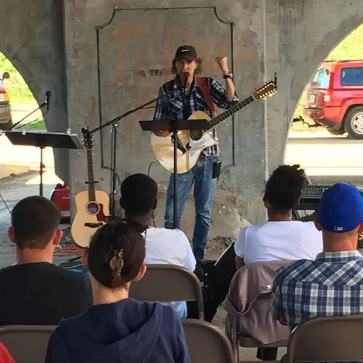

Our Story
The Worship Wagon idea came to a couple of individuals in different ways at different times, but these two guys and their respective organizations put their collective energy together and collaborated to bring Worship Wagon to the streets of Kansas City. The first service rolled out on a dark and extremely cold night in November of 2014, but God proved faithful, as He always does, and the weekly non-denominational church service has been going strong every week since.
In 2014, Bruce McGregor from Freedom Fire Ministries was ready to start a church plant somewhere in downtown Kansas City. After realizing there were several potentially good locations, he started thinking about making his church plant mobile. A couple years earlier, Joe Ratterman from Hope in the Streets was also thinking about bringing a church service into the streets of Kansas City.
God brought these two guys together, and they met several times to discuss their respective ministries and ambitions. In 2014, they realized that they might be able to combine their visions into a single reality. They also traveled to Waco, Texas, to visit Pastor Jimmy Dorrell and learn about Church Under the Bridge, a project that provided final insights for bringing Worship Wagon to life in Kansas City.
In 2020, we introduced an additional service location, enabling us to reach an even broader population of our homeless friends that camp near Union Station. Between our two locations, we are currently joined by eight different church partners in bringing church services to the homeless community in Kansas City every week.
The local organizations that make Worship Wagon possible are Freedom Fire Ministries and Hope in the Streets. If you would like to support Worship Wagon financially, you can donate to either organization.

